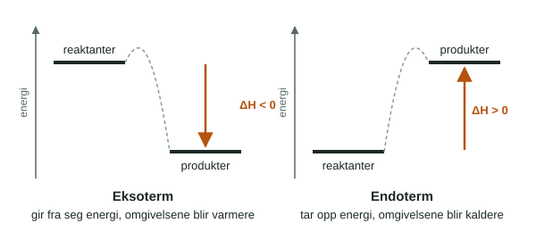
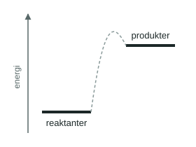

Energi i reaksjoner og andre prosesser – eksoterm og endoterm
Noen reaksjoner og prosesser gir fra seg varme, andre må tilføres varme. I et anlegg må varmen enten føres bort med kjølevann eller tilføres med damp eller strøm. Derfor må du vite om en reaksjon gir eller tar energi, og hvor mye.
Hvor kommer energien fra?
Alle stoffer inneholder kjemisk energi, og ulike stoffer inneholder ulik mengde. Har produktene mindre kjemisk energi enn reaktantene, gir reaksjonen fra seg energien som blir til overs. Har produktene mer energi, må reaksjonen ta opp energi fra omgivelsene.
Hvorfor har stoffene ulik energi? I en reaksjon brytes bindinger, og nye dannes:
- Å bryte bindinger krever energi.
- Når nye bindinger dannes, frigjøres energi.
Frigjøres det mer energi når de nye bindingene dannes, enn det som trengs for å bryte de gamle, gir reaksjonen fra seg energi. Det skjer når de nye bindingene er sterkere enn de gamle. Er det motsatt, tar reaksjonen opp energi.
Eksoterm og endoterm
- En eksoterm reaksjon gir fra seg energi til omgivelsene. Det blir varmere rundt. Eksempler er forbrenning og nøytralisering.
- En endoterm reaksjon tar opp energi fra omgivelsene. Det blir kaldere rundt, eller du må varme opp for at reaksjonen skal gå. Eksempler er kalkbrenning og spalting av hornsalt.
Det som reagerer, kalles systemet. Alt rundt, som begerglasset, vannet og lufta, kalles omgivelsene.

Legg merke til den stiplede «bakken» i diagrammet. De fleste reaksjoner må få et lite energitilskudd for å komme i gang, selv om de er eksoterme. Dette kalles aktiveringsenergi. Derfor må du tenne på en gassbrenner, og derfor brenner ikke papir av seg selv i lufta.
Entalpiendring, ΔH
Varmen som en reaksjon gir fra seg eller tar opp ved konstant trykk, kalles entalpiendringen, ΔH («delta H»). Den oppgis i kJ/mol og gjelder for de mengdene som står i reaksjonsligningen.
- ΔH er negativ for en eksoterm reaksjon. Systemet mister energi.
- ΔH er positiv for en endoterm reaksjon. Systemet får energi.
| Reaksjon | ΔH (kJ/mol) | Type |
|---|---|---|
| \( \ce{C(s) + O2(g) -> CO2(g)} \) | −394 | eksoterm |
| \( \ce{CH4(g) + 2O2(g) -> CO2(g) + 2H2O(l)} \) | −890 | eksoterm |
| \( \ce{CaCO3(s) -> CaO(s) + CO2(g)} \) | +178 | endoterm |
Andre prosesser som gir eller tar energi
Det er ikke bare reaksjoner som er eksoterme eller endoterme. Det gjelder også prosesser der stoffene er de samme før og etter, for eksempel når et stoff skifter fase eller løses i vann. Slike prosesser går ofte begge veier. Den omvendte prosessen har like stor energiendring, men motsatt fortegn.
Tabellen viser noen vanlige eksempler. Det finnes flere, for eksempel sublimering (fast stoff blir til gass), adsorpsjon (gass fester seg til en overflate) og oppløsning av andre salter.
| Prosess | Omvendt prosess |
|---|---|
| fordamping: endoterm | kondensering: eksoterm |
| smelting: endoterm | frysing (størkning): eksoterm |
| oppløsning av ammoniumnitrat eller natriumacetat: endoterm | krystallisering (utfelling): eksoterm |
| oppløsning av kalsiumklorid eller natriumhydroksid: eksoterm | krystallisering (utfelling): endoterm |
Faseoverganger: Damp kan varme opp en tank fordi den gir fra seg energi når den kondenserer. Når vann fordamper fra huden, tar det energi, og du blir kald.
Oppløsning og krystallisering: Når et salt løses i vann, brytes ionegitteret. Det krever energi. Samtidig binder vannmolekylene seg til ionene, og da frigjøres energi. Er det mest energi som frigjøres, blir vannet varmt. Er det mest energi som trengs, blir vannet kaldt. Det brukes i kuldeposer i førstehjelpsskrinet. Når saltet krystalliserer ut av løsningen igjen, skjer det motsatte. Natriumacetat tar opp varme når det løses, og gir fra seg like mye varme når det krystalliserer. Det brukes i varmeposer som kan lades opp igjen ved at de kokes. Prøv selv på Kuldepose og varmepose.
Fortynning: Når konsentrert svovelsyre blandes med vann, blir det svært varmt. Se sikkerhetsboksen lenger ned.
Eksempel
Oppgave: Metan brenner fullstendig. ΔH = −890 kJ/mol. Hvor mye energi frigjøres når 1,00 kg metan brenner?
- Mol CH4: \( n = \dfrac{1000 \text{ g}}{16{,}04 \text{ g/mol}} = 62{,}3 \text{ mol} \)
- Ligningen har 1 mol CH4, så hver mol metan gir 890 kJ.
- Energi: \( 62{,}3 \text{ mol} \cdot 890 \text{ kJ/mol} = 55\,500 \text{ kJ} \)
Svar: Det frigjøres omtrent 55 500 kJ, altså 55,5 MJ.
ΔH = −890 kJ/mol gjelder når vannet som dannes, blir flytende. I en kjel går vannet som regel ut som damp med røykgassen. Da får man omtrent 50 MJ per kilo i stedet.
Slike beregninger brukes når man lager energibalanser for et anlegg. Det lærer du mer om i Fysiske prinsipper.
Sterkt eksoterme reaksjoner og prosesser kan koke over eller sprute. Når du fortynner konsentrert svovelsyre, skal du alltid helle syren langsomt i vannet, aldri vann i syren. Natriumhydroksid blir også svært varmt når det løses i vann. Løs det i små porsjoner, med omrøring, vernebriller og hansker. Forsøk der du varmer opp stoffer, skal gjøres i avtrekk. Når hornsalt spaltes, dannes ammoniakk, som er en stikkende gass.
Test deg selv
Hva slags reaksjon viser energidiagrammet?

- eksoterm
- endoterm
- ingen energiendring
Produktene har mer energi enn reaktantene. Reaksjonen tar opp energi, og ΔH er positiv.
Et begerglass blir varmt når to løsninger blandes. Hva slags reaksjon er det?
- eksoterm
- endoterm
- en faseovergang
Reaksjonen gir energi til omgivelsene, og det blir varmere.
Hva betyr det at ΔH er negativ?
- Reaksjonen tar opp energi.
- Reaksjonen gir fra seg energi.
- Reaksjonen går ikke.
Negativ ΔH betyr at systemet mister energi til omgivelsene: eksoterm.
Hva krever energi i en reaksjon?
- å bryte bindinger
- å danne bindinger
- ingen av delene
Å bryte bindinger krever energi. Når nye bindinger dannes, frigjøres energi.
Hvorfor brukes damp til å varme opp tanker i industrien?
- Damp er en eksoterm reaksjon.
- Damp gir fra seg mye energi når den kondenserer.
- Damp leder strøm.
Kondensering er eksoterm. Dampen gir fra seg fordampingsvarmen når den blir til vann igjen.
Ordliste
| Begrep | Forklaring | Engelsk |
|---|---|---|
| eksoterm | Reaksjon eller prosess som gir fra seg energi til omgivelsene, så det blir varmere rundt. ΔH er negativ. | exothermic |
| endoterm | Reaksjon eller prosess som tar opp energi fra omgivelsene, så det blir kaldere rundt. ΔH er positiv. | endothermic |
| entalpiendring (ΔH) | Energien som en reaksjon gir fra seg eller tar opp ved konstant trykk, oppgitt i kJ/mol. | |
| aktiveringsenergi | Energien som må til for at en reaksjon skal komme i gang. | |
| system | Det som reagerer, og som vi ser på. | |
| oppløsning | Når et stoff blandes med en væske og fordeler seg som enkeltmolekyler eller ioner, slik at det blir en løsning. | |
| krystallisering | Når et oppløst stoff skilles ut av løsningen som faste krystaller. Kalles også utfelling. | |
| omgivelser | Alt rundt systemet, for eksempel beholderen, vannet og lufta. |
Les mer
- Kjemien stemmer, kapittel 6. Oppgaver: 6.1.1–6.1.3.
- Tema Fysiske prinsipper.
Om kildene: Teksten, eksemplene og figurene på denne siden er laget for dette nettstedet. ΔH-verdiene er vanlige tabellverdier ved 25 °C. Siden bygger på undervisningsopplegg i kjemiprosess- og laboratoriefag ved Sauda vgs, som er utarbeidet med utgangspunkt i blant annet Kjemien stemmer, Laboranten og åpne nettkilder.